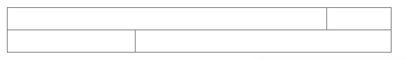
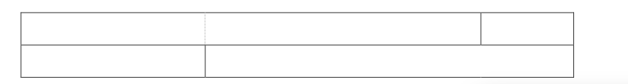

word2007文档格式
对于文书来说，有很多需要生成的，一直以来用的是POI，但是似乎对文档的控制粒度粗了一下，所以潜心下来看一下怎么样操作docx4j。
word文档格式
对于2007版本的word格式后缀是 docx，这其实是一个zip有所的xml文件包。docx4j其实就是用java对象，来表示及引用这个包内的各个parts。这就不能不介绍一些存在于其中的概念了。
一个比较好的方式是把docx文档上传到 http://webapp.docx4java.org ，然后查看其中的 partList。
每个 part 通常是 XML，但也有可能不是（比如一个 image part）。
所有的 parts 形成了一棵树，如果某个 part 有 child，其必须有一个相关的 part 来标识。
包含主要文档主要文本的 part 叫做 Main Document Part。每个part都有一个名字，Main Document Part 通常叫做 /word/document.xml。
如果文档有 头部，Main Document Part会有一个 头部子part，这可以通过 Main Document Part 中的 关系来描述。
更详细的介绍可以参考文档 OpenXML。
Stories(翻译为节？）
每个 WordprocessingML 由 一系列的 stories(节)组成。每个 story 都代表了 文档中的 一个文本区域。有如下 区域 ： comment, endnote, footer, footnote, frame, glossary document, header, main story, subdocument, text box。
除了一个例外（一个 glossary document），文档中的所有 stories 利用 一些通用的属性来表示每 个 sotry的内容。这些属性包括 字体信息，风格定义，数组定义，及文档设置等。
文档基本结构
一个 最简单 的 WordprocessingML 文档的 main document story 由下面的XML元素组成：
- document — WordprocessingML main document part 的根 元素，它定义了 main document story
- body — 组成 main story 的 块-级别 结构集合的容器。
- p — 一个段落
- r — 一个 run
- t — 一个文本范围
一个 run 表示 story 中 具有共同属性集的文本区域. WordprocessingML 文档中的文本必须包含在 一个或多个 run 内。一个 paragraph 是一个或多个 run 以一个单元显示的集合。 run必须包含在 paragraph内。
看看下面最简单的一个例子：
xml version="1.0" |
Paragraphs
WordprocessingML 文档内最基本的 块级别内容单元就是 paragraphs，其使用 p 元素来存储。一个 paragraph 定义了以一个新行开始的分隔区域。其可以包含三类信息：可选的 段落属性，内联的内容（典型的是runs），及可选的用来比较两个文档内容的版本 IDs。
考虑一个内容居中的段落片段 The quick brown fox jumped …。段落内所有的文本都使用 斜体，段落内容拥有 排版居中属性，段落中的每个 run都存储了这个斜体属性，例如：
<w:p> |
该运行在其运行内容中指定了两个格式化属性：粗体和斜体。这些属性因此适用于此运行中的所有内容。
生产者可以将运行分解成任意数量的较小运行，只要每个较小的运行使用同一组属性，而不更改文档的内容。
考虑下面的 WordprocessingML 文档，一个高效的生产者可以选择使用两次运行来输出这个内容，如下所示：
<w:r> |
但是，效率较低的生产者可能会使用四次运行，如下所示：
<w:r> |
尽管后面的例子使用四次而不是两次，但应用于每个文本区域的净运行信息是相同的，并且两者同样有效。
当然，可能需要打破运行。例如，该运行中仅有一些文本的属性发生更改，要求将更改的部分放入自己的运行中。另一个例子涉及将某种标记插入现有运行的中间。这需要运行分解成两个，并在它们之间插入标记。
下面的 run 有两个句子：
<w:r> |
如果前两个单词用粗体显示，则需要将运行分解为两次运行以存储格式，如下所示：
<w:r> |
除文本外，运行还可以包含多种文本内容（§2.4.3）运行也可以包含一组用于文档“合并和比较”的修订ID。
Run Content
此层次结构的最低级别是运行内容，即可以存储在文档的单个运行中的内容,WordprocessingML run 的内容包括：
- 文本
- 删除的文字
- 软线断裂
- 域代码
- 删除的域代码
- 脚注/尾注引用标记简单字段
- 页码
- 标签
- Ruby文本
- DrawingML内容
- 嵌入对象
- 图片
Headers and Footers
页眉和页脚引用了 文本，图形，或数据（如页码，日期，文本标题等等），他们可能会在WordprocessingML中每页的顶或底部出现。
页眉出现在顶部（在 页内 main document content 的上方），页脚出现在其下面。
因为 WordprocessingML 是一个 基于流的格式，页眉和页脚通过通过文档特定节中所有页的页眉或页脚来应用。
Header Part
WordprocessingML 的页眉信息存储在 header part，其在 Main Document part 或 Glossary Document part内以关联Id引用，关联类型是 http://schemas.openxmlformats.org/wordprocessingml/2006/header and has a content
8 type of vnd-openxmlformats.officedocument.wordprocessingml-header+xml。
Footer Part
同上，类型不同：http://schemas.openxmlformats.org/wordprocessingml/2006/footer and has a content
13 type of vnd-openxmlformats.officedocument.wordprocessingml-footer+xml
Headers and Footers
如上所述，页眉和页脚信息会存在在 docx 包内的一个或多个 header/footer part内。
hdr元素为文档定义了单个标题，而ftr元素为其定义了单个页脚文件。 页眉和页脚只是WordprocessingML中的另一个文档 story。 在header/footer 的根元素内，元素的内容和 body 元素的内容相似，同时包含了去引用的 块级别-标记 —这种标记在 WordprocessingML 中与 段落元素平级。
文档每节都可能有三种不同类型的页眉和页脚。
- First page header/footer
- Odd page header/footer
- Even page header/footer
表格
WordprocessingML中另一种块级别的内容，表格，是按行和列排列的一组段落（和其他块级内容）。
简介
WordprocessingML中的表格通过tbl元素定义，类似于HTML
tbl元素具有两个定义其属性的元素：tblPr，它定义了表格范围属性（如样式和宽度）以及定义表格网格布局的tblGrid。 tbl元素还可以包含任意非零数量的行，其中每行都用tr元素指定。 每个tr元素可以包含任意非零数目的单元格，其中每个单元格都用tc元素指定。
考虑一个空的单细胞表（即：一行一列的表）和所有边上的1点边框：
<w:tbl> <w:tblPr> <w:tblW w:w="5000" w:type="pct"/> |
上面这个表格指定了一个表格范围内的属性———— 100%页宽（tblW的 type 属性在 w 属性内的 宽度值 应该怎么解释———— pct 表示一个百分点的 50分之一）及表格的边框 tblBorders，tblGrid定义了一系列垂直共享的边缘，还有一个单行。
表格属性
tblPr元素定义了表格范围内的属性，应用于表内每行和单元格的属性。 可以在tblPr元素的定义中找到完整的表格范围属性集。
考虑一个一行两列的简单表：
<w:tbl> |
在这个例子中，tblW元素定义了表格的总宽度，在这种情况下，该表格被设置为auto，它指定表的大小应该适合其内容。 tblBorders元素指定每个元素的表格边框，并在顶部，左侧，底部，右侧和水平内部指定一个点边框垂直边框。 通过指定表格，可以在单个行的基础上覆盖表格范围内的属性。
Table Grid（网格）
tblGrid元素定义表格的网格。 表中的所有列（包括行之前和之后的空格）引用此网格。 每个gridCol在表格布局中定义单个网格列，用于定义表格中垂直线的存在。 tblGrid元素可以包含任意数量的gridCol元素，其中每个gridCol元素代表表格中的一个网格列并定义单个网格条目。 如下所述，当单元格布置在此表格中时，将强制所有单元格对齐由此网格定义的共享列边缘。
回到先前的那个 ‘一个单元格的表’ 例子，这个只有一列，列宽为 10296 （单位是1/20打印点）。这种单位（1/20 打印点，缇）常在 WordprocessingML中使用，然后转换成 1/1440 英寸（1/20 打印点，1点是1/72 英寸）。
<w:tblGrid> |
考虑一个复杂的表格，有两行两列，但是列不是对齐的。

该表格通过将单元布置在由三个表格网格列组成的表格网格上来表示，每个网格列表示表格中的逻辑垂直列：

虚线表示每个表格网格列的虚拟垂直延续，可以用WordprocessingML代码表示：
<w:tblGrid> <w:gridCol w:w="2952"/> <w:gridCol w:w="4416"/> <w:gridCol w:w="1488"/> </w:tblGrid> |
需要注意的是每个没有跨越 grid 列（比如，跨越两个相邻的 垂直线）的格子必须通过提供 gridSpan 元素并指定一个值来确定此格子会跨越多少个 grid columns。每个 gridCol表示一个共享的 列（格子可以捕捉），虽然其没有一个可视的显示。
表格行与单元格
表格行用 tr 元素来定义，这和 HTML <tr>标记类似。tr 元素表现得像是一行单元格的容器。
tr 有一个用于格式化的子元素，trPr，它定义了 行的属性（比如行的宽度），以及其是否能跨页。每个属性，通过单独的 trPr 元素来定义 。同样，表格行可以包含两种类型的内容：自定义标记（自定义的XML或结构化的文档标签）与单元格。
行中的单元格通过 tc 来定义，其包含了表格的内容，与HTML的 <td>类似。
tc 有子元素用于格式化 tcPr，同样每个属性用一个 tcPr 独立定义。每个单元格可以包含任何有效的 块级别 内容，允许在单元格内嵌套段落和表格。
下面的例子中，tcW 定义了列的宽度，属性 w 的值单位是 twips（缇，1/20打印点）。这里，单元格的宽度是 8856 单位，其中，单位通过 type 属性来定义， dxa 表示单位是 缇。
<w:tr> <w:tc> <w:tcPr> <w:tcW w:w="8856" w:type="dxa"/> </w:tcPr> <w:p/> </w:tc> </w:tr> |
tc 元素包含了单元格的内容，这个例子中是空的。
考虑一个包含 Hello world 的单元格。
| Hello world |
其可以这样表示：
<w:tr> <w:tc> <w:tcPr> <w:tcW w:w="1770" w:type="dxa"/> </w:tcPr> <w:p> <w:r> <w:t>Hello, World</w:t> </w:r> </w:p> </w:tc> </w:tr> |
在行和单元格级别，其属性必须指定 行和列 在 表的网格中是怎么放置的。
trPr 元素包含了行在开始前或结束后要忽略的网格数，这通过 gridBefore, gridAfter 元素来指定，这允许行在网格中的不同列处开始，同时 wBefore/wAfter元素指定了 前导/拖尾的空白。
tcPr 通过 gridSpan 元素来指定单元格跨越了多多少网格，tcW 用来指定单元格的宽度。
在前面的那个有两行和两个不同尺寸单元格的例子中，应该用三个网格列来进行表示（每个用垂直线分隔）。考虑第一行的如下表示：
<w:tr> ... <w:tc> <w:tcPr> <w:tcW w:w="5145" w:type="dxa" /> <w:gridSpan w:val="2" /> </w:tcPr> <w:p /> </w:tc> <w:tc> <w:tcPr> <w:tcW w:w="2145" w:type="dxa" /> </w:tcPr> <w:p/> </w:tc> </w:tr> |
gridSpan 表示 单元格跨越了多少列。
要注意，表中的所有宽度都是首选宽度————因为表格总是要去满足 网格的需求，相互冲突的属性必须通过在一个指定的 manner 中重写首选宽度来解决。
表格布局 table layout
表格以一系列的属性表示：
- 表级别的属性（如 首选宽度）
- 表网格列
- 行级别属性
- 单元格级别属性
为了控制这些属性，使用了下面的逻辑，这根据表的类型而定。
固定宽度表格
这种表格不会根据内容而改变尺寸。这这种表格中，表格信息在下面的方式中使用：
- 表网格用来创建共享列，他们的初始宽度通过 tblGrid 元素来定义。
- 表的总宽度通过 tblW 属性来定义————如果设置为
auto or nil，那么其宽度通过 行和 单元格的信息来指定。 - 读取第一行会跳过此行开始前的初始网格单元数。要跳过的网格列宽度通过 wBefore属性来设置。
- 第一个单元格被放在网格中，通过 gridSpan设置的跨越网格列数宽度基于 tcW属性设置。
- 剩下的单元格被放入网格中。
- 在每个步骤中，如果单元格需求的宽度超过了表的宽度，那么每个嘿格列都会减少尺寸来适应表格宽度。
- 如果网格超出（如 tblGrid 指定了三个网格列，但是第二个单元格却使用了 gridSpan=4），网格会以一个默认的值来新建一个网格列。
- 对于每个接下来的行，单元格被放在网格中，每个网格列会被调整到所请求的最大值，这通过在 结束的那个单元格上增加宽度来实现。
自适应表格
走完上面的步骤后会计算最大或者最小的宽度，调整网格列来进行适应。
- 最小的网格列宽，就是只跨越一个网格列的，内容最端的单元格宽度。
- 对于跨越多个网格列的单元阁，会增加所有网格列的宽度来适应其最小宽度
- 如果网格列中的单元格拥有首选宽度，第一个这种宽度会覆盖网格列内容宽度的最大宽度。
- 将单元格中的文本放到表格中，检查每个单元格内容的最小内容宽度。如果一个单元格的最小内容宽度超出了单元格当前的宽度，按下面的方式进行覆盖：
首先，通过缩小所有其他网格列的宽度（直到其最小宽度）来重新设置当前列宽。那么这个单元格的宽度会边到其最小值和 最大值内。
接着，重写首选的表格宽度，直到到达页宽。
最后，如果需要的话在每个单元格内容内增加换行符。
复杂表格例子
最好的演示就是通过例子来展示。
如上所述，单元格可以被水平合并。
垂直合并单元格
可以通过 tcPr 的 vmerge 元素来指定单元格对行的合并。
| First cell, first row | Last cell, first row |
| First cell, second row | Last cell, second row |
我们想要下面这样的效果：
| First cell, first row | Last cell, first row Last cell, second row |
| First cell, second row |
WordprocessingML 是这样表示的：
<w:tr> <w:tc> <w:p> <w:r> <w:t>First cell, first row</w:t> </w:r> </w:p> </w:tc> <w:tc> <w:tcPr> <w:vmerge w:val="restart"/> </w:tcPr> <w:p> <w:r> <w:t>Last cell, first row</w:t> </w:r> </w:p> <w:p> <w:r> <w:t>Last cell, second row</w:t> </w:r> </w:p> </w:tc> </w:tr> |
vmerge 的值 restart,restarts开始一个合并区域，而没有值的单元格就会被合并到上面的一个。